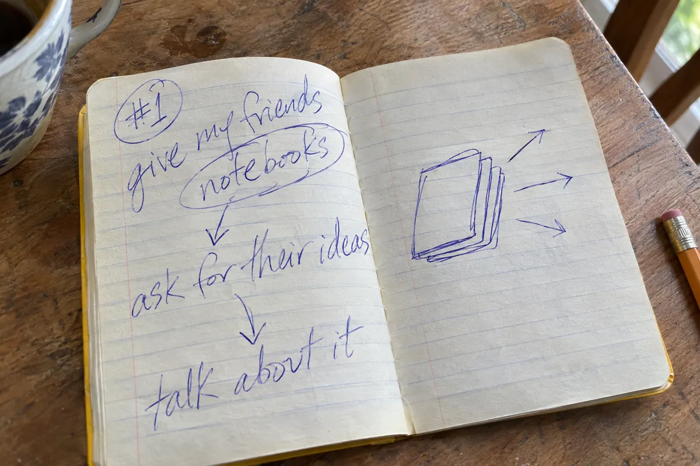

I have an idea.
A podcast about strange, intriguing, brilliant, and other ideas from little yellow notebooks. We explore ideas for the good of the community. Sincere, inspiring, and a little bit funny.
New episodes happen every other Thursday, most likely.
I should just give some of my friends a notebook and tell them to write down their ideas and we should talk about it. And that's pretty much it.
Tim, explaining the whole thing, episode 1, 0:05:48
Listen
RSS is for any other podcast app: copy that link and paste it in.
Newest episode
The Philosophy and Politics of the Hallowed Weenie in Disguise and, Eventually, Death feat. Robert Lucas
From the notebooks
Three ideas, picked at random. Isaac says the genres are “good, bad, and terrible”. You decide which.
Made from an episode
Ideas from the show, turned into things you can poke at.